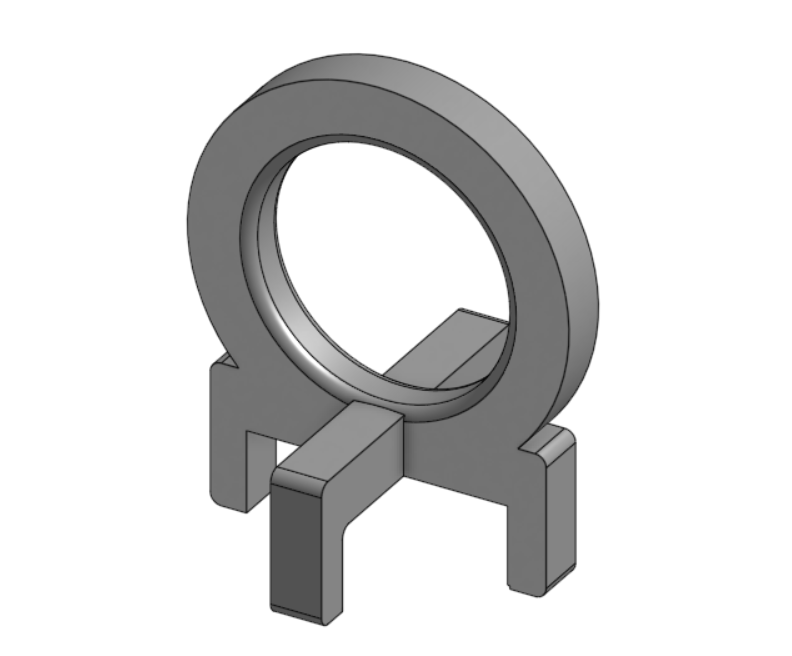
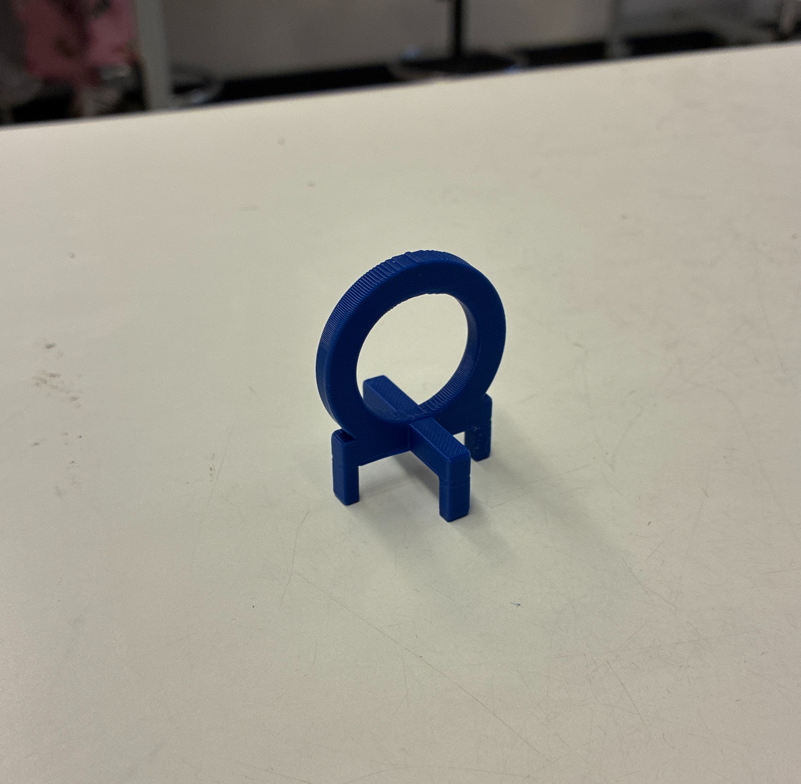

Problem:
Many people have trouble identifying which water bottle is theirs and can have trouble knowing which one is theirs if they lose it.
Solution:
With the bottle cap holders, people can distinguish which water is theirs and not take someone else's.